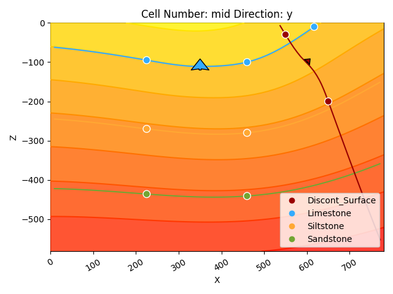
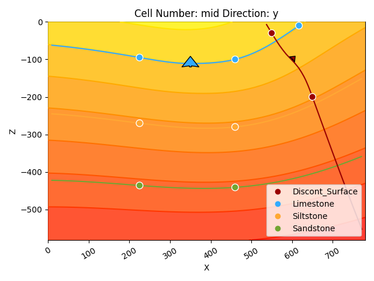
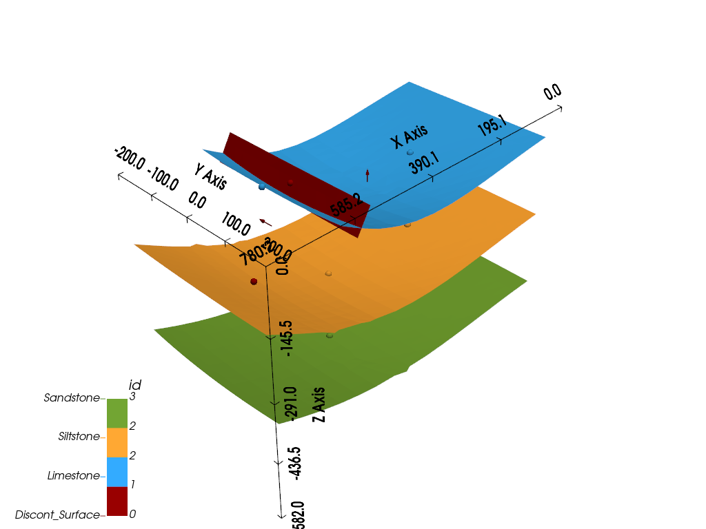
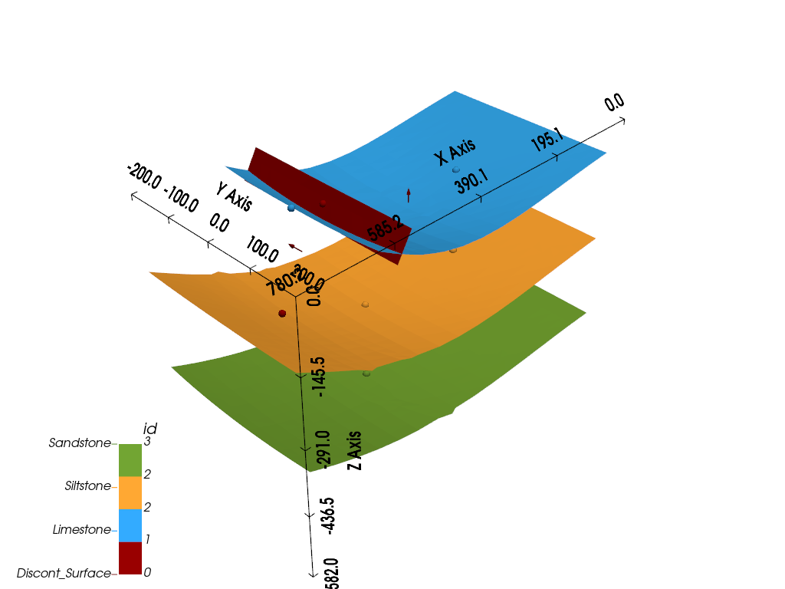

Note
Click here to download the full example code
Getting Started¶
# Importing GemPy
import gempy as gp
# Importing aux libraries
import numpy as np
import matplotlib.pyplot as plt
import matplotlib.image as mpimg
Initializing the model:¶
The first step to create a GemPy model is create a gempy.Model object that will contain all the other data structures and necessary functionality.
In addition for this example we will define a regular grid since the beginning. This is the grid where we will interpolate the 3D geological model. GemPy comes with an array of different grids for different pourposes as we will see below. For visualization usually a regular grid is the one that makes more sense.
geo_model = gp.create_model('Model1')
geo_model = gp.init_data(geo_model, extent=[0, 791, 0, 200, -582, 0], resolution=[100, 10, 100])
Out:
/home/miguel/miniconda3/envs/gempy/lib/python3.8/site-packages/theano/gpuarray/dnn.py:192: UserWarning: Your cuDNN version is more recent than Theano. If you encounter problems, try updating Theano or downgrading cuDNN to a version >= v5 and <= v7.
warnings.warn(
Active grids: ['regular']
GemPy core code is written in Python. However for efficiency (and other reasons) most of heavy computations happend in optimize compile code, either C or CUDA for GPU. To do so, GemPy rely on the library theano. To guarantee maximum optimization theano requires to compile the code for every Python kernel. The compilation is done by calling the following line at any point (before computing the model):
gp.set_interpolator(geo_model, theano_optimizer='fast_compile', verbose=[])
Out:
Setting kriging parameters to their default values.
Compiling theano function...
Level of Optimization: fast_compile
Device: cpu
Precision: float64
Number of faults: 0
Compilation Done!
Kriging values:
values
range 1002.20008
$C_o$ 23914.404762
drift equations [3]
<gempy.core.interpolator.InterpolatorModel object at 0x7fccb8dda370>
Creating figure:¶
GemPy uses matplotlib and pyvista-vtk libraries for 2d and 3d visualization of the model respectively. One of the design decisions of GemPy is to allow real time construction of the model. What this means is that you can start adding input data and see in real time how the 3D surfaces evolve. Lets initialize the visualization windows.
The first one is the 2d figure. Just place the window where you can see it (maybe move the jupyter notebook to half screen and use the other half for the renderers).
%matplotlib qt5
p2d = gp.plot_2d(geo_model)

Add model section¶
In the 2d renderer we can add several cross section of the model. In this case, for simplicity sake we are just adding one perpendicular to y.
Loading cross-section image:¶
Remember that gempy is simply using matplotlib and therofe the ax object created above is a standard matplotlib axes. This allow to manipulate it freely. Lets load an image with the information of couple of boreholes
Reading image
img = mpimg.imread('wells.png')
# Plotting it inplace
p2d = gp.plot_2d(geo_model, show=False)
p2d.axes[0].imshow(img, origin='upper', alpha=.8, extent=(0, 791, -582, 0))
plt.show()
We can do the same in 3D through pyvista and vtk rendering:
p3d = gp.plot_3d(geo_model)

Building the model¶
Now that we have everything initialize we can start the construction of the geological model.
Surfaces¶
GemPy is a surface based interpolator. This means that all the input data we add has to be refered to a surface. The surfaces always mark the bottom of a unit. By default GemPy surfaces are empty:
If we do not care about the names and we just want to interpolate a surface we can use:
Default surfaces:
Now we can start adding data. GemPy input data consist on surface points and orientations (perpendicular to the layers). The 2D plot gives you the X and Z coordinates when hovering the mouse over. We can add a surface point as follows:
Add a point
geo_model.add_surface_points(X=223, Y=0.01, Z=-94, surface='surface1')
# Plot in 2D
gp.plot_2d(geo_model, cell_number=11)
# Plot in 3D
gp.plot_3d(geo_model)

Out:
/WorkSSD/PythonProjects/gempy/gempy/core/data_modules/geometric_data.py:1368: RuntimeWarning: divide by zero encountered in true_divide
new_grid_extent = (grid_extent - np.repeat(centers, 2)) / rescaling_factor + 0.5001
/WorkSSD/PythonProjects/gempy/gempy/core/data_modules/geometric_data.py:1369: RuntimeWarning: divide by zero encountered in true_divide
new_grid_values = (grid_values - centers) / rescaling_factor + 0.5001
/WorkSSD/PythonProjects/gempy/gempy/core/interpolator.py:152: RuntimeWarning: divide by zero encountered in double_scalars
range_res = range_val / self.additional_data.rescaling_data.df.loc[
/WorkSSD/PythonProjects/gempy/gempy/core/interpolator.py:175: RuntimeWarning: divide by zero encountered in double_scalars
cov_res = cov_val / self.additional_data.rescaling_data.df.loc[
<gempy.plot.vista.GemPyToVista object at 0x7fccd0e64460>
Now we can add the other two points of the layer:
Add points
geo_model.add_surface_points(X=458, Y=0, Z=-107, surface='surface1')
geo_model.add_surface_points(X=612, Y=0, Z=-14, surface='surface1')
# Plotting
gp.plot_2d(geo_model, cell_number=11)
gp.plot_3d(geo_model)


Out:
<gempy.plot.vista.GemPyToVista object at 0x7fcc2a5f0e50>
The minimum amount of data to interpolate anything in gempy is: a) 2 surface points per surface b) One orientation per series.
Lets add an orientation anywhere in space:
Adding orientation
geo_model.add_orientations(X=350, Y=0, Z=-300, surface='surface1', pole_vector=(0, 0, 1))
gp.plot_2d(geo_model, cell_number=5)
gp.plot_3d(geo_model)
Out:
<gempy.plot.vista.GemPyToVista object at 0x7fcc2a5dc790>
Now we have enough data for finally interpolate!
Out:
Lithology ids
[2. 2. 2. ... 2. 2. 2.]
That is, we have interpolated the 3D surface. We can visualize:
In 2D
gp.plot_2d(geo_model, cell_number=[5])
# In 3D
gp.plot_3d(geo_model, show_surfaces=True)


Out:
<gempy.plot.vista.GemPyToVista object at 0x7fcc2a5e8700>
Adding more layers:¶
So far we only need 2 units defined. The cross-section image that we load have 4 however. Lets add two layers more:
geo_model.add_surfaces(['surface3', 'basement'])
Layer 2¶
Add the layer next layers:
Your code here:
geo_model.add_surface_points(X=225, Y=0, Z=-269, surface='surface2')
geo_model.add_surface_points(X=459, Y=0, Z=-279, surface='surface2')
# --------------------
Compute model
Out:
Lithology ids
[4. 4. 4. ... 2. 2. 2.]
gp.plot_2d(geo_model, cell_number=5, legend='force')
gp.plot_3d(geo_model)
 

Out:
<gempy.plot.vista.GemPyToVista object at 0x7fcc418cb940>
Layer 3¶
Your code here:
geo_model.add_surface_points(X=225, Y=0, Z=-439, surface='surface3')
geo_model.add_surface_points(X=464, Y=0, Z=-456, surface='surface3')
geo_model.add_surface_points(X=619, Y=0, Z=-433, surface='surface3')
# ------------------
Computing and plotting 3D
gp.compute_model(geo_model)
gp.plot_2d(geo_model, cell_number=5, legend='force')
gp.plot_3d(geo_model, kwargs_plot_structured_grid={'opacity': .2})


Out:
<gempy.plot.vista.GemPyToVista object at 0x7fcbe0030f70>
So far the model is simply a depositional unit. GemPy allows for unconformities and faults to build complex models. This input is given by categorical data. In general:
input data (surface points/ orientations) <belong to< surface <belong to< series
And series can be a fault—i.e. offset the rest of surface— or not. We are going to show how to add a fault as an example.
First we need to add a series:
geo_model.add_features('Fault1')
geo_model.reorder_features(['Fault1', 'Default series'])
Then define that is a fault:
geo_model.set_is_fault('Fault1')
Out:
Fault colors changed. If you do not like this behavior, set change_color to False.
But we also need to add a new surface:
geo_model.add_surfaces('fault1')
And finally assign the new surface to the new series/fault
gp.map_stack_to_surfaces(geo_model, {'Fault1': 'fault1'})
Now we can just add input data as before (remember the minimum amount of input data to compute a model):
Add input data of the fault
geo_model.add_surface_points(X=550, Y=0, Z=-30, surface='fault1')
geo_model.add_surface_points(X=650, Y=0, Z=-200, surface='fault1')
geo_model.add_orientations(X=600, Y=0, Z=-100, surface='fault1', pole_vector=(.3, 0, .3))
# Plotting Inpute data
gp.plot_2d(geo_model, show_solutions=False)

Out:
<gempy.plot.visualization_2d.Plot2D object at 0x7fcbe00cdee0>
And now is computing as before:
Compute
gp.compute_model(geo_model)
# Plot
gp.plot_2d(geo_model, cell_number=5, legend='force')
gp.plot_3d(geo_model, kwargs_plot_structured_grid={'opacity': .2})
 

Out:
<gempy.plot.vista.GemPyToVista object at 0x7fcc749edc70>
As you can see now instead of having folding layers we have a sharp jump. Building on this you can pretty much any model you can imagine.
Additional features:¶
Over the years we have built a bunch of assets integrate with gempy. Here we will show some of them:
GemPy has a built-in capabilities to read and manipulate topographic data (through gdal). To show an example we can just create a random topography:
Adding random topography
geo_model.set_topography(source='random', fd=1.9, d_z=np.array([-150, 0]),
resolution=np.array([200, 200]))
Out:
Active grids: ['regular' 'topography']
Grid Object. Values:
array([[ 3.955 , 10. , -579.09 ],
[ 3.955 , 10. , -573.27 ],
[ 3.955 , 10. , -567.45 ],
...,
[ 791. , 197.98994975, -117.32042406],
[ 791. , 198.99497487, -115.02473356],
[ 791. , 200. , -114.7005127 ]])
The topography can we visualize in both renderers:
gp.plot_2d(geo_model, cell_number=5, legend='force')
gp.plot_3d(geo_model, kwargs_plot_structured_grid={'opacity':.2})

Out:
<gempy.plot.vista.GemPyToVista object at 0x7fcb8bff71f0>
But also allows us to compute the geological map of an area:
gp.compute_model(geo_model)
# sphinx_gallery_thumbnail_number = 16
gp.plot_3d(geo_model, show_topography=True)

Out:
/WorkSSD/PythonProjects/gempy/gempy/core/solution.py:173: VisibleDeprecationWarning: Creating an ndarray from ragged nested sequences (which is a list-or-tuple of lists-or-tuples-or ndarrays with different lengths or shapes) is deprecated. If you meant to do this, you must specify 'dtype=object' when creating the ndarray.
self.geological_map = np.array(
<gempy.plot.vista.GemPyToVista object at 0x7fcc2cff5130>
GemPy also allows for inversions (in production only gravity so far). We can see a small demo how this works.
The first thing to do is to assign densities to each of the units:
geo_model.add_surface_values([0, 2.6, 2.4, 3.2, 3.6], ['density'])
Also we can create a centered grid around a device for precision:
geo_model.set_centered_grid(centers=[[400, 0, 0]], resolution=[10, 10, 100], radius=800)
Out:
Active grids: ['regular' 'topography' 'centered']
Grid Object. Values:
array([[ 3.955 , 10. , -579.09 ],
[ 3.955 , 10. , -573.27 ],
[ 3.955 , 10. , -567.45 ],
...,
[ 1200. , 800. , -922.71624587],
[ 1200. , 800. , -964.3665184 ],
[ 1200. , 800. , -1008. ]])
We need to modify the compile code:
gp.set_interpolator(geo_model, output=['gravity'], theano_optimizer='fast_run')
Out:
Setting kriging parameters to their default values.
Compiling theano function...
Level of Optimization: fast_run
Device: cpu
Precision: float64
Number of faults: 1
Compilation Done!
Kriging values:
values
range 1002.20008
$C_o$ 23914.404762
drift equations [3, 3]
<gempy.core.interpolator.InterpolatorModel object at 0x7fccb8dda370>
But now additionally to the interpolation we also compute the forward gravity of the model (at the point XYZ = 400, 0, 0)
Out:
array([-80.36323225])
Total running time of the script: ( 0 minutes 44.872 seconds)